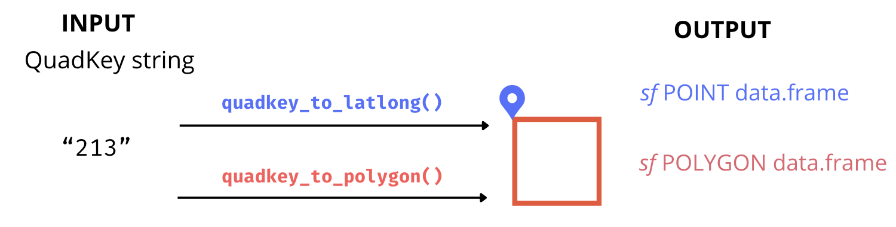
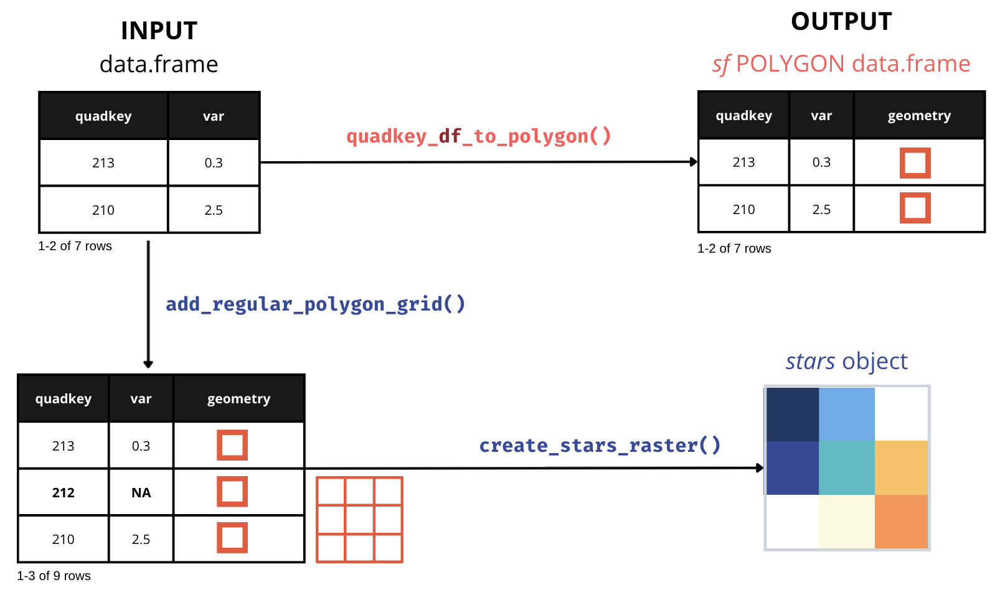
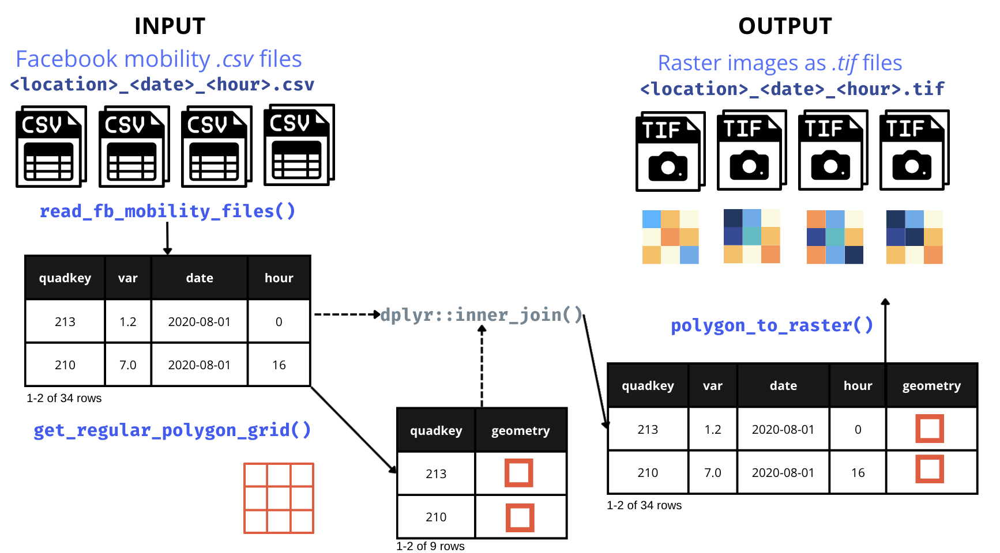

What can this package do for you?
The quadkeyr R package presents a comprehensive toolkit tailored for generating raster images from Quadkey-Identified data within Microsoft’s Bing Maps Tile System. Designed to integrate Quadkey-Identified data into R workflows, this package facilitates the creation of QuadKey grids and raster images and introduces specialized functions for the processing of Meta Mobility data, previously referred to as Facebook mobility data.
What are QuadKeys in Tile Maps?
Tile maps divide the Earth’s surface into a grid of tiles, with each tile corresponding to a specific geographic area at various zoom levels.
QuadKeys represent a location on a map by encoding its hierarchical spatial position as a sequence of characters. They provide an efficient method to address and retrieve specific map tiles, facilitating rapid display within mapping applications.

The QuadKey of any tile starts with the QuadKey of its parent tile (the containing tile at the previous level). Image extracted from Microsoft’s Bing Maps Tile System webpage.
The goal of quadkeyr is to:
-
Convert a QuadKey to a Simple Features data.frame (and more)
quadkeyrprovides functions to convert a QuadKey to asfPOINT data.frame orsfPOLYGON data.frame. Additionally, it offers all the R functions described in the official documentation for converting QuadKeys to and from tiles, pixels, and geographic coordinates.

-
Generate Raster Images from Quadkey-Identified Data Complete a grid of QuadKeys within a specified area and zoom level, and create a
starsraster. You can also directly convert QuadKeys in a data.frame column into ansfPOLYGON data.frame.

-
Convert Meta (Facebook) Mobility QuadKey-identified Datasets into Raster Files Convert Meta (Facebook) mobility data
.csvfiles into.tiffiles by day and hour reported.

- Offer an App for visualizing QuadKeys on a map Introduce a QuadKey visualization application enabling users to validate function outcomes.
Install quadkeyr
R-Universe
For the latest development version of quadkeyr:
install.packages("quadkeyr",
repos = "https://ropensci.r-universe.dev")GitHub
You can install the development version of quadkeyr from GitHub with:
# install.packages("remotes")
remotes::install_github("Fernandez-Lab-WSU/quadkeyr")Code of Conduct
Please note that this package is released with a Contributor Code of Conduct. By contributing to this project, you agree to abide by its terms.
Contribute
If you’d like to contribute to this project, please follow the contributing guidelines